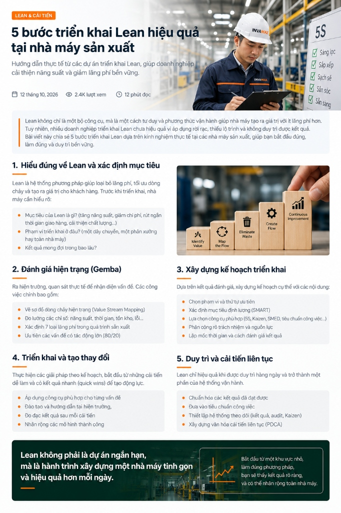

Lean không chỉ là một bộ công cụ, mà là một cách tư duy và phương thức vận hành giúp nhà máy tạo ra giá trị với ít lãng phí hơn. Tuy nhiên, nhiều doanh nghiệp triển khai Lean chưa hiệu quả vì áp dụng rời rạc, thiếu lộ trình và không duy trì được kết quả.
Bài viết này chia sẻ 5 bước triển khai Lean dựa trên kinh nghiệm thực tế tại các nhà máy sản xuất, giúp bạn bắt đầu đúng, làm đúng và duy trì bền vững.

Hiểu đúng về Lean và xác định mục tiêu
Lean là hệ thống phương pháp giúp loại bỏ lãng phí, tối ưu dòng chảy và tạo ra giá trị cho khách hàng. Rất nhiều doanh nghiệp bắt đầu Lean bằng cách áp dụng ngay 5S hay Kaizen mà chưa làm rõ lý do tại sao phải làm. Trước khi triển khai, ban lãnh đạo và đội ngũ nhà máy cần thống nhất và hiểu rõ:
- Mục tiêu của Lean là gì? Bạn muốn tăng năng suất (UPPH), giảm chi phí sản xuất, rút ngắn thời gian giao hàng (Lead Time) hay cải thiện tỷ lệ chất lượng (First Pass Yield)?
- Phạm vi triển khai ở đâu? Chọn một dây chuyền làm điểm (Pilot Line), một phân xưởng thử nghiệm hay triển khai quy mô toàn nhà máy?
- Kết quả mong đợi trong bao lâu? Xác định rõ mốc thời gian đánh giá (30 ngày, 90 ngày hay 6 tháng).
Identify Value
Xác định giá trị khách hàng sẵn sàng trả
Map the Flow
Lập sơ đồ dòng chảy giá trị (VSM)
Eliminate Waste
Loại bỏ 7 loại lãng phí (Muda)
Create Flow
Tạo dòng chảy sản xuất liên tục
Continuous Imprv.
Cải tiến liên tục không ngừng (Kaizen)
Đánh giá hiện trạng (Gemba)
Ra hiện trường (Gemba), quan sát thực tế để nhận diện vấn đề. Dữ liệu trên báo cáo trong phòng họp thường che giấu nhiều sự thật tại xưởng sản xuất. Các công việc chính trong bước này bao gồm:
- Vẽ sơ đồ dòng chảy hiện trạng (Value Stream Mapping - VSM): Theo dõi hành trình của một chi tiết/sản phẩm từ kho nguyên vật liệu qua từng công đoạn gia công, lắp ráp đến kho thành phẩm.
- Đo lường các chỉ số vận hành thực tế: Năng suất theo giờ, Cycle Time từng công đoạn, thời gian chờ, lượng tồn kho bán thành phẩm trên chuyền (WIP) và tỷ lệ lỗi tại từng công đoạn.
- Xác định 7 loại lãng phí (Muda) trong quá trình sản xuất:
- Ưu tiên các vấn đề có tác động lớn (Nguyên tắc 80/20): Phân tích Pareto để chọn ra 20% nút thắt cổ chai (bottlenecks) đang tạo ra 80% lãng phí và chậm trễ của dây chuyền.
Xây dựng kế hoạch triển khai
Dựa trên kết quả đánh giá hiện trạng tại Gemba, xây dựng kế hoạch cụ thể, rõ ràng và có tính cam kết cao với các nội dung trọng tâm:
- Chọn phạm vi và thứ tự ưu tiên: Chọn một chuyền hoặc khu vực làm "Mô hình điểm" (Model Line / Pilot Area) có vấn đề rõ ràng và người quản lý nhiệt huyết để triển khai trước.
- Xác định mục tiêu định lượng (SMART): Mục tiêu phải đo đếm được. Ví dụ: Rút ngắn thời gian chuyển đổi mã hàng 40%, giảm tồn kho WIP 30%, tăng OEE từ 62% lên 75% trong 90 ngày.
- Lựa chọn công cụ phù hợp: Áp dụng đúng công cụ cho đúng bài toán — 5S cho nền tảng trực quan; Kaizen cho giải quyết vấn đề nhanh; SMED cho rút ngắn thay khuôn; SOP cho chuẩn hóa thao tác.
- Phân công rõ trách nhiệm và nguồn lực: Phân định rõ ai là Project Owner, ai phụ trách kỹ thuật, ai phụ trách đào tạo công nhân và ngân sách hỗ trợ cần thiết.
- Lập mốc thời gian và cách đánh giá kết quả: Xây dựng biểu đồ tiến độ (Gantt chart), lịch họp đánh giá hàng tuần và chỉ số nghiệm thu từng mốc.
Triển khai và tạo thay đổi
Thực hiện các giải pháp theo kế hoạch đã lập. Bí quyết thành công ở giai đoạn này là bắt đầu từ những cải tiến dễ làm và có kết quả nhanh (Quick Wins) để tạo niềm tin và động lực cho toàn bộ nhân sự:
- Áp dụng công cụ phù hợp cho từng vấn đề: Triển khai 5S triệt để tại chuyền điểm, sắp xếp lại dụng cụ theo nguyên tắc công thái học, cân bằng chuyền (Line Balancing) để xóa bỏ ùn ứ.
- Đào tạo và hướng dẫn tại hiện trường (OJT): Không đào tạo trong phòng học máy lạnh. Hãy ra trực tiếp máy móc, cầm tay chỉ việc và cùng công nhân thao tác theo cách thức mới.
- Đo đạc kết quả sau mỗi cải tiến (Before - After): Ghi nhận lại hình ảnh, số liệu trước và sau cải tiến, dán lên bảng tin trực quan của phân xưởng để mọi người cùng nhìn thấy thành quả.
- Nhân rộng các mô hình thành công: Sau khi chuyền điểm hoạt động ổn định và chứng minh được hiệu quả bằng con số, tổ chức cho các tổ trưởng khác đến tham quan học hỏi và bắt đầu chuyển giao.
Duy trì và cải tiến liên tục
Lean chỉ thực sự phát huy giá trị khi được duy trì hàng ngày và trở thành một phần của hệ thống vận hành. Đã có rất nhiều nhà máy cải tiến rầm rộ trong 1 tháng đầu, nhưng sau 3 tháng lại quay về thói quen lộn xộn cũ. Để duy trì bền vững:
- Chuẩn hóa các kết quả đã đạt được: Biến các cải tiến thành quy trình chuẩn (SOP), bảng hướng dẫn công việc một trang (One Point Lesson - OPL) có hình ảnh trực quan rõ ràng.
- Đưa vào tiêu chuẩn công việc: Tiêu chuẩn hóa thời gian thao tác, cách bố trí vật tư, danh mục kiểm tra đầu ca (Start-up Checklist) cho từng vị trí.
- Thiết lập hệ thống theo dõi định kỳ: Tổ chức kiểm tra chéo (5S Audit hàng tuần), duy trì bảng theo dõi sản lượng theo giờ và bảng ghi nhận ý tưởng Kaizen.
- Xây dựng văn hóa cải tiến liên tục (Vòng lặp PDCA): Plan (Lập kế hoạch) → Do (Thực hiện) → Check (Kiểm tra) → Act (Chuẩn hóa & cải tiến tiếp). Biến cải tiến thành phản xạ tự nhiên của đội ngũ.
Sẵn sàng chuyển đổi Lean cho nhà máy của bạn?
Các chuyên gia thực chiến của INVAMAX sẵn sàng đồng hành cùng doanh nghiệp bạn: từ khảo sát Gemba tại hiện trường, chẩn đoán nút thắt lãng phí đến thiết kế lộ trình chuyển đổi tinh gọn bền vững.
Đăng ký khảo sát & tư vấn miễn phí